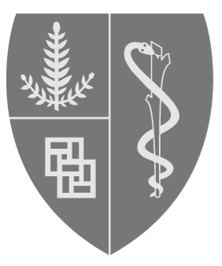
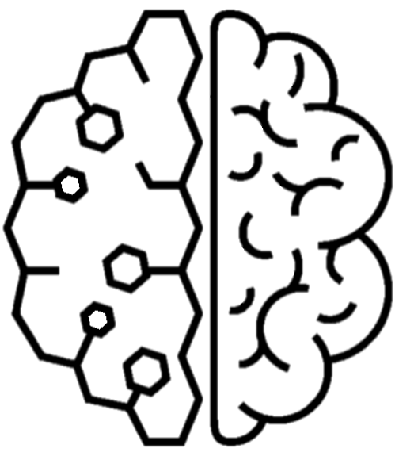
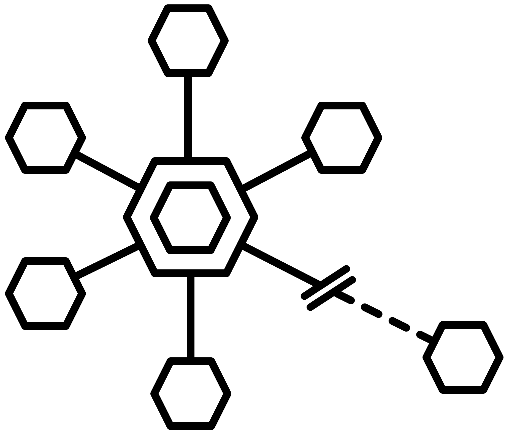
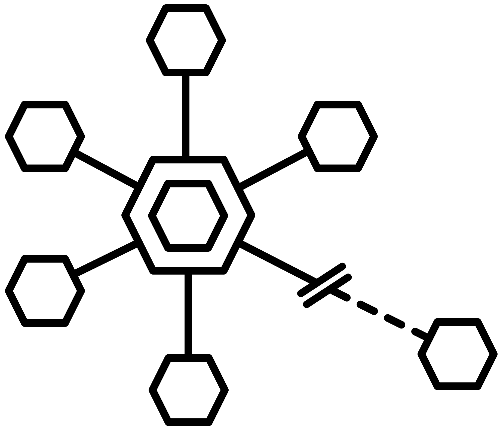
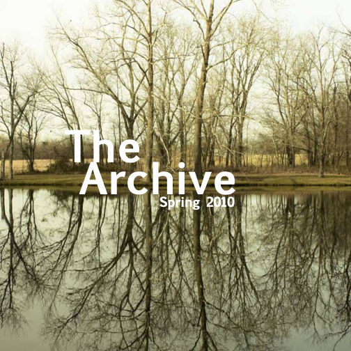
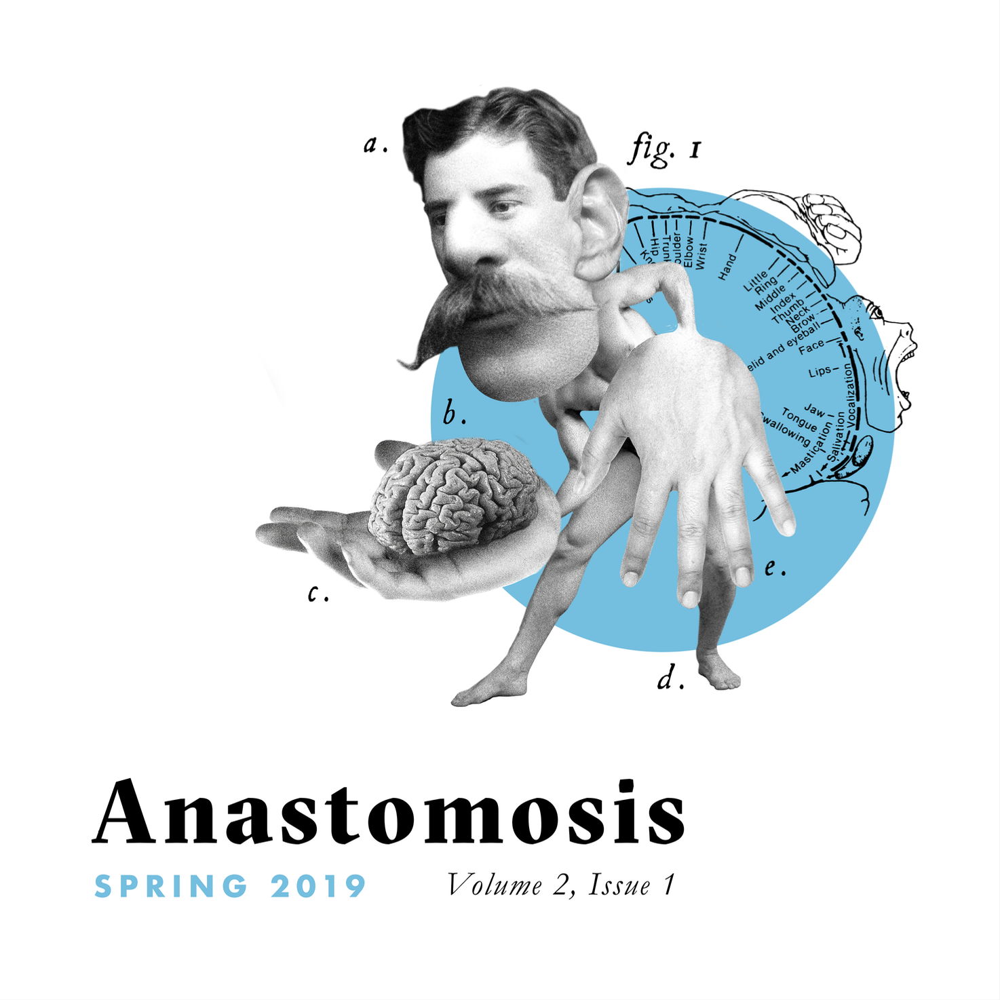
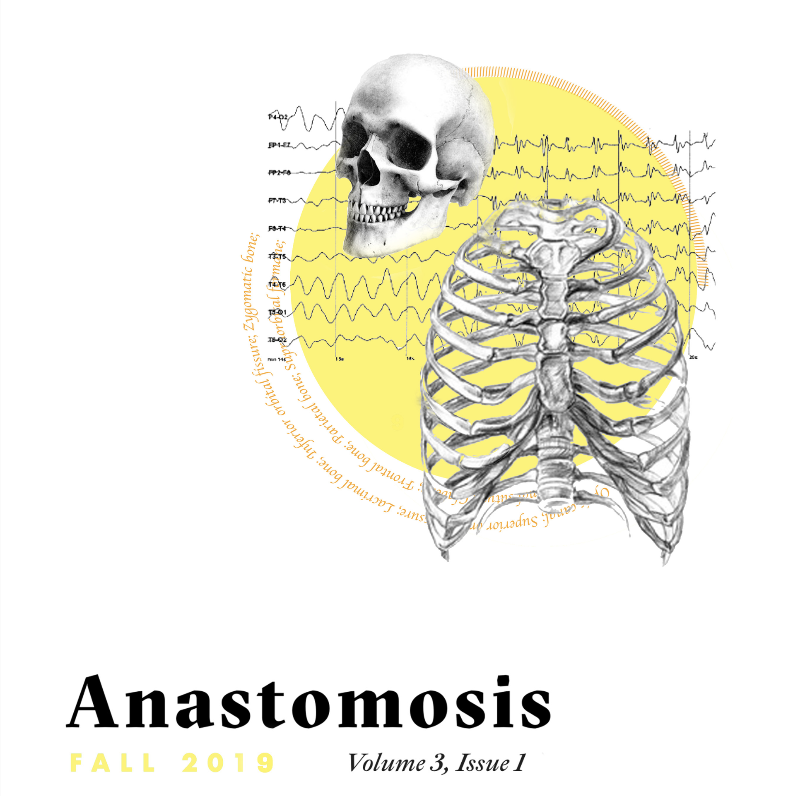

Dr. Ellie Beam
is a physician-scientist seeking to advance mental healthcare through computational and humanistic approaches. She works at Stanford Health Care as a resident in psychiatry on the research track. Her interests outside the hospital include writing, running, and eating plants.Training Journey

BS, BA.In 2013, Ellie graduated summa cum laude from Duke University with a BS in Neuroscience and a BA in English, earning distinction for theses in both majors. Her research in the lab of Scott Huettel applied network text analyses to map the semantic structure of human neuroimaging. |
|
Research.From 2013 to 2015, Ellie worked in the lab of Randy Buckner at Harvard University and Massachusetts General Hospital. In addition to coordinating studies of affective illness, she led an independent project investigating cognitive control network disruption in subthreshold depression. |
|
MD, PhD.In 2022, Ellie completed MD/PhD training at Stanford School of Medicine with mentorship by Amit Etkin and Russ Poldrack. Her PhD thesis in the Neurosciences developed a computational approach to mapping domains of brain function from the human neuroimaging literature. She was supported by the NRSA fellowship and recognized by the Leah J. Dickstein Award from the Association of Women Psychiatrists. |
|
|  | Residency.Ellie is currently a resident physician in psychiatry at Stanford Health Care. As a member of the research track, she intends to combine natural language processing, machine learning, and other computational approaches to reconceptualize mental illness through the language of people living with it. |
In the News
On the Web
Contact
© 2024 Elizabeth H. Beam


Data-driven ontology of brain function
In modern healthcare, there is no accepted system for diagnosing disorders of mental function based on the altered brain systems that cause them. In neuroscience, there is no consensus on what a brain system is. My PhD thesis took a data-driven approach to mapping domains of brain function across the human neuroimaging literature. Neural circuits and associated mental functions were mapped from the brain coordinate data and full texts of nearly 20,000 studies. The resulting domains characterize several novel brain circuits that are absent from the conceptually dominant expert-determined frameworks in the field. The ontology can be viewed above and at neuro-knowledge.org.

Brain network disruption in mental illness
Mood disorders affect not only the way people feel, but also the way they plan and process information. The frontoparietal control network is believed to play a crucial role in support of goal-directed planning and adaptive behavioral adjustments. As part of my post-undergraduate work, I examined the integrity of the frontoparietal circuitry in young adults showing signs of depressive illness onset. Deficits in executive functioning were found to predict a decline in frontoparietal network integrity.
The semantic structure of neuroscience
Human neuroscience is a linking discipline that seeks to understand relationships between the systems of the brain and the processes of the mind. As an undergraduate, I visualized the semantic structure of human neuroscience by mapping co-occurrences of anatomical and psychological terms in fMRI article abstracts. Graph theoretical analyses identified topics that were likely to advance the integrative goal of the field.
Bibliography
Peer-Reviewed Articles
- Tu, J., Tran, D., Beam, E.H. (2022). Neurocysticercosis. RSNA Case Collection. DOI: 10.1148/cases.20226020.
- Beam, E.H., Potts, C., Poldrack, R.A., & Etkin, A. (2021). A data-driven framework for mapping domains of human neurobiology. Nature Neuroscience. DOI: 10.1038/s41593-021-00948-9.
- Siless, V., Davidow, J.Y., Nielsen, J., Fan, Q., Hedden, T., Hollinshead, M., Beam, E.H., Vidal Bustamante, C.M., Garrad, M.C., Santillana, R., Smith, E.E., Hamadeh, A., Snyder, J., Drews, M.K., Van Dijk, K.R.A., Sheridan, M., Somerville, L.H., Yendiki, A. (2020). Registration-free analysis of diffusion MRI tractography data across subjects through the human lifespan. NeuroImage 214(116703). DOI: 10.1016/j.neuroimage.2020.116703.
- Beam, E.H.,* Appelbaum, L.G.,* Jack, J., Moody, J., & Huettel, S.A. (2014). Mapping the semantic structure of cognitive neuroscience. Journal of Cognitive Neuroscience 26(9). DOI: 10.1162/jocn_a_00604.
Community Articles
- Beam, E.H. (2022). Multiple immune cell types and a checkpoint implicated in myasthenia gravis. Rare Disease Advisor.
- Beam, E.H. & Ballon, J. (2022). A decade of drug discovery for schizophrenia: TAAR1 and muscarinic agonists. CureSZ Foundation Newsletter.
- Beam, E.H. (2020). A brief history of our language for the brain: Vocabulary, dictionary, and poetry. NeuWrite West Blog.
- Beam, E.H. (2019). How the brain learns to learn. NeuWrite West Blog.
- Beam, E.H. (2018). Resolving conflict in the medial frontal cortex. NeuWrite West Blog.
- Beam, E.H. (2014). Brain and language on the fly: The neuroscience of linguistic improvisation. Harvard Science Review 27(2).
- Beam, E.H. (2013). Data: The bigger the better? Harvard Science Review 27(1).
- Beam, E.H. (2012). Creativity and the default network. Neurogenesis: The Undergraduate Journal of Neuroscience 2(1).
- Beam, E.H. (2010). Sylvia Plath on edge: A case for the correlation of bipolar disorder and exceptional poetic creativity. Eruditio: Duke Humanities Journal 30(1).
Pre-Print Article
Patent
Book Chapters
- Beam, E.H. & Ballon, J. (2024). A decade of drug discovery for schizophrenia: TAAR1 and muscarinic agonists. In B. Yeiser & H.A. Nasrallah (Eds.), Awakenings: Stories of Recovery and Emergence from Schizophrenia (pp. 217-220). Seattle, WA: Amazon.
- Jack, J., Appelbaum, L.G., Beam, E.H., Huettel, S.A., & Moody, J. (2017). Mapping rhetorical topologies in cognitive neuroscience. In L. Walsh & C. Boyle. (Eds.), Topologies as Techniques for a Post-Critical Rhetoric (pp. 125-150). New York, NY: Palgrave Macmillan.
Theses
- Beam, E.H. (2020). A data-driven ontology of brain function: Engineered, interrogated, and clinically applied. In fulfillment of the requirements for a PhD in the Neurosciences, Stanford University.
- Beam, E.H. (2013). Mapping the semantic structure of cognitive neuroimaging. In fulfillment of the requirements for Graduation with Distinction in Neuroscience, Duke University.
Talks
- Beam, E.H. (2024, April). Natural language processing approaches to understanding psychosis. CURESZ Foundation. Virtual.
- Beam, E.H. (2023, March). Data-driven mapping and validation of a framework for human brain function. Symposium: The data science future of cognitive neuroscience. 30th Anniversary Meeting of the Cognitive Neuroscience Society. San Francisco, CA.
- Ballon, J., Beam, E.H. (2023, February). Medications in the pipeline for schizophrenia. CURESZ Foundation. Virtual.
- Beam, E.H. (2022, May). A data-driven ontology of brain function: Engineered, interrogated, and clinically applied. Stanford Psychology Department Friday Seminar Series. Stanford, CA.
- Beam, E.H. (2019, May). A computational knowledge engine for human neuroscience. Stanford MSTP Retreat. Santa Cruz, CA.
- Platt, M., Jenson, D., Harris, L., Beam, E.H., & Mooney, R. (2013, April). Brain science and our creative culture. Duke Forward. New York, NY.
- Appelbaum, L.G. & Beam, E.H. (2012, November). Mapping disciplinary structures using network and semantic analysis. Text>Data Digital Scholarship Series. Durham, NC.
Posters
- Beam, E.H. & Etkin, A. (2018, May). Toward a data-driven ontology of human brain function. Stanford MSTP Retreat, Santa Cruz, CA.
- Beam, E.H., Maron-Katz, A., & Etkin, A. (2017, May). Discovery of post-traumatic stress disorder biotypes by clustering subcortical volumetrics. 34th Annual Stanford Medical Student Research Symposium.
- Beam, E.H., Preston, S., & Jain, S. (2017, May). Preliminary outcomes of a novel protocol for phone-based management of antidepressant therapy initiated in primary care. 50th Annual Conference of the Society of Teachers of Family Medicine.
- Barbour, T., DeCross, S.N., Holmes, A.J., Boeke, E.A., Beam, E.H., Wolthusen, R.P.F., Crowell, S., Coombs, G., Nyer, M., Buckner, R.L., Fava, M., Farabaugh, A.H., Holt, D.J. (2014, December). Insecure attachment in at-risk youth is associated with hyper-responsivity of a parietofrontal cortical network involved in social behavior. American College of Neuropsychopharmacology Annual Meeting.
- Holt, D.J., DeCross, S.N., Holmes, A.J., Boeke, E.A., Beam, E.H., Wolthusen, R.P.F., Crowell, S., Coombs, G., Nyer, M., Buckner, R.L., Fava, M., Farabaugh, A.H. (2014, December). Abnormal amygdala functional connectivity in youth with subclinical delusions. American College of Neuropsychopharmacology Annual Meeting.
- Beam, E.H., Coombs, G., Boeke, E., Crowell, S., Fava, M., Farabaugh, A., Holt, D.J., Buckner, R.L., & Holmes, A.J. (2014, September). Frontoparietal network connectivity associates with executive functioning deficits in young adults at risk for depression. Resting State and Brain Connectivity Conference.
- Beam, E.H. & Huettel, S.A. (2013, April). Mapping the semantic structure of cognitive neuroscience. Atlantic Coast Conference Meeting of the Minds.
- Beam, E.H., Appelbaum, L.G., Moody, J., & Huettel, S.A. (2011, November). Mapping the intrinsic structure of cognitive neuroscience. Society for Neuroscience Annual Meeting.
Funding
| 2024- | Trailblazing Trainee Award, Stanford University, Department of Psychiatry and Behavioral Sciences |
| 2020-22 | Ruth L. Kirschstein National Research Service Award (F30), National Institutes of Health |
| 2017-22 | Medical Scientist Training Program (MSTP), National Institutes of Health |
| 2016-17 | Medical Scholars Research Fellowship, Stanford School of Medicine |
| 2016 | Pre-Doctoral Research Stipend (T32), Lab of Alan Schatzberg, Stanford University |
| 2009-13 | Angier B. Duke Full-Tuition Memorial Scholarship, Duke University |
| 2009 | Cleveland Technical Societies Scholarship |
© 2024 Elizabeth H. Beam
Selected Publications




The Head Block
In anatomy lab today we're facedwith the aftermath of a revolution.
French in the cringiest sense. Heads
of cadavers severed and displaced
from bodies onto wooden blocks,
the usual coup of medical school.
Now we learn the cranial nerves,
and meanwhile set aside the box
of ideas about the mind inside
the brain encased in skull behind
her eyes, thankfully still cloaked
by a paper drape left limply tied.
They cut off her head but not mine,
and mine is experiencing the physics
of a feeling about dying. It is gravity
circling into the reality of this resign
from humankind to organic matter
that rots but for the formaldehyde
fixing her husk like a bug in amber.
To the dissectors buzzing with chatter
the woman lies crystallized in tenses
past rememberable. But it gets messier.
The mind-body dichotomy is false-
ish. Give me a moment to notice
her bottom lip is thinly split. I ask
how unsubtle can the violence be
that we won't tell? That dwells is us?
That doctors wear behind their masks?
My questions swell to fill the sac
we zip her into at the end of class.
It is customary to let them dissipate
instead of ask, but I turn back
or rather, I'm pulled by a new force.
If it's rebellion to grieve, I will revolt.
The tragedy would be twice if I ceded
my core to rigor for this course.
© 2024 Elizabeth H. Beam